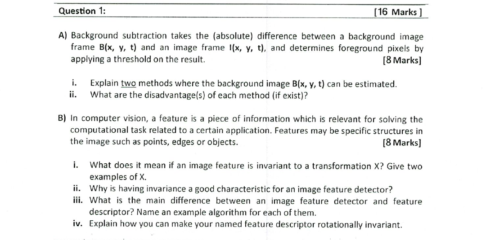

Question 1 — Background subtraction & feature invariance [16 Marks]
Question 1 (as printed)

Part A — Two ways to estimate the background image B(x, y, t)
A "background image" is what the scene would look like with no moving objects. You either grab one clean frame, or you average many frames so the moving stuff washes out. Each trick has a clear downside — that's what the question wants you to name.
| Method | Idea (one line) | Disadvantage |
|---|---|---|
| 1. Static reference frame | Take a single frame of the empty scene before any object enters, and use that as B(x, y, t) for every later frame. | It is wrong the moment anything in the scene changes — lighting shifts, a chair gets moved, the camera nudges. Any permanent change leaks in as fake foreground. |
| 2. Running average / median of recent frames | Update B(x, y, t) every frame as a weighted blend of the previous background and the new frame (or take the temporal median over a window). | If an object stays still for a while it gets absorbed into the background; if an object moves very slowly it can leave a "ghost" trail; you also need a learning rate that's neither too sticky nor too fast. |
Part B — Feature invariance, detectors and descriptors
i. What does "invariant to a transformation X" mean? (with two examples)
It means you can apply X to the image and the same feature still pops out at the same place with the same description. Two examples of X: translation (shifting the image left/right) and rotation (turning the image).
ii. Why is invariance a desirable property?
If a feature dies the moment the camera tilts or the object shifts, it's useless for matching across two photos of the same scene.
So the same physical point in the world produces the same feature vector across different views — which is what makes matching, tracking and recognition work in real conditions.
iii. Detector vs descriptor (one example each)
| Detector | Descriptor | |
|---|---|---|
| Job | Find where the interesting points are. It scans the image and flags locally distinctive structures (corners, blobs, ...). | Once a location is given, summarise what it looks like as a compact vector that throws away irrelevant info but keeps enough to match. |
| Example | Harris corner detector | SIFT descriptor |
iv. How to make SIFT rotation invariant
The trick is to give every keypoint its own "north" — a canonical orientation — and describe the patch relative to it. Then a rotated copy of the same patch ends up with the same descriptor.
- Around the keypoint, compute the gradient direction at each pixel of the local window.
- Build a 36-bin histogram of those directions (10° per bin), weighted by gradient magnitude and by a Gaussian centred on the keypoint.
- The highest peak of that histogram is the keypoint's canonical orientation.
- Rotate the window so that orientation points "up", then compute the descriptor on the rotated window.
Because the descriptor is always computed in the keypoint's own frame, the same physical patch produces the same descriptor no matter how the image is rotated.
📚 L04 — SIFT (scale-space, orientation assignment, descriptor).